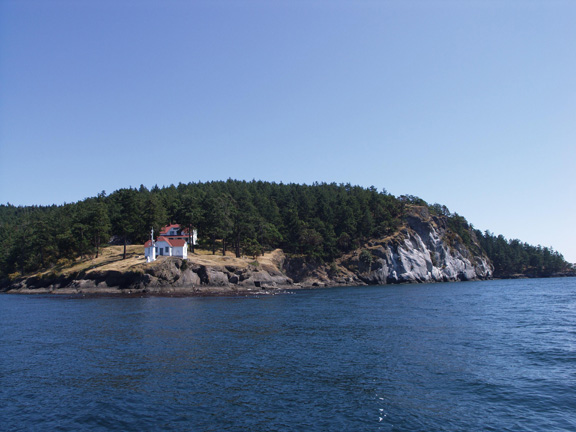
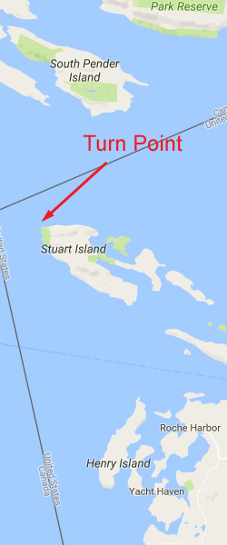

<!doctype html>
<html>
<head>
<meta charset="utf-8">
<title>Turn Point</title>
<meta name="generator" content="WYSIWYG Web Builder - http://www.wysiwygwebbuilder.com">
<link href="Emerald_Diving.css" rel="stylesheet">
<link href="turn_point.css" rel="stylesheet">
<script>
function onChangeGoMenu1(){var a=document.getElementById('GoMenu1-select'),b=a.options[a.selectedIndex].value,c=a.options[a.selectedIndex].className;a.selectedIndex=0;a.blur();b&&(NewWin=window.open(b,c),window.NewWin.focus())};
</script>
</head>
<body>
<script>
var gaJsHost = (("https:" == document.location.protocol) ? "https://ssl." : "http://www.");
document.write(unescape("%3Cscript src='" + gaJsHost + "google-analytics.com/ga.js' type='text/javascript'%3E%3C/script%3E"));
</script>
<script>
try {
var pageTracker = _gat._getTracker("UA-15987748-1");
pageTracker._trackPageview();
} catch(err) {}</script>

<div id="container">
<div id="wb_MasterPage1" style="position:absolute;left:0px;top:2px;width:1048px;height:57px;z-index:3;">
<div id="wb_Shape1" style="position:absolute;left:0px;top:0px;width:1048px;height:57px;z-index:0;">
</div>
<div id="wb_Text1" style="position:absolute;left:20px;top:5px;width:169px;height:16px;z-index:1;">
<span style="color:#00FF00;font-family:Arial;font-size:13px;"><em><a href="./local_sites_sj.html" class="Green">Return to San Juan Map</a></em></span></div>
<div id="wb_GoMenu1" style="position:absolute;left:800px;top:5px;width:225px;height:25px;z-index:2;">
<form id="GoMenu1" role="menu">
<select id="GoMenu1-select" name="GoMenu1" onchange="onChangeGoMenu1()">
<option class="_self" value="#" selected>Select a Dive Site</option>
<option class="_self" value="./davidson.html" role="menuitem">Davidson Rocks</option>
<option class="_self" value="./deadman_wall.html" role="menuitem">Deadman Island Wall</option>
<option class="_self" value="./kellett_wall.html" role="menuitem">Kellett Wall</option>
<option class="_self" value="./lawrence_point.html" role="menuitem">Lawrence Point</option>
<option class="_self" value="./lawson_bluff.html" role="menuitem">Lawson Bluff</option>
<option class="_self" value="./long_island.html" role="menuitem">Long Island West Wall</option>
<option class="_self" value="./peavine_pass.html" role="menuitem">Peavine Pass</option>
<option class="_self" value="./pile_point.html" role="menuitem">Pile Point</option>
<option class="_self" value="./point_doughty.html" role="menuitem">Point Doughty</option>
<option class="_self" value="./sares_head.html" role="menuitem">Sares head</option>
<option class="_self" value="./strawberry_island.html" role="menuitem">Strawberry Island</option>
<option class="_self" value="./turn_point.html" role="menuitem">Turn Point</option>
<option class="_self" value="./whale_rocks.html" role="menuitem">Whale Rocks</option>
</select>
</form>
</div>
</div>
<div id="wb_Text2" style="position:absolute;left:160px;top:568px;width:324px;height:12px;z-index:4;">
<span style="color:#000000;font-family:Arial;font-size:11px;">Double click to edit</span></div>
<div id="wb_Text1654" style="position:absolute;left:7px;top:1227px;width:477px;height:1px;z-index:5;">
&nbsp;</div>
<div id="wb_Image2" style="position:absolute;left:0px;top:58px;width:794px;height:594px;z-index:6;">
</div>
<div id="wb_Text3" style="position:absolute;left:22px;top:66px;width:527px;height:54px;z-index:7;">
<span style="color:#009300;font-family:Arial;font-size:48px;">Turn Point Wall</span></div>
<div id="wb_Text4" style="position:absolute;left:0px;top:671px;width:555px;height:1px;z-index:8;">
&nbsp;</div>
<div id="wb_Text5" style="position:absolute;left:1px;top:655px;width:1030px;height:1464px;z-index:9;">
<span style="color:#FFFFFF;font-family:Arial;font-size:15px;"><strong>Topography: </strong>Expansive sheer rock wall that drops over 140 feet.<br><br><strong>San Juan Islands marine life rating: </strong>4<strong><br></strong><br><strong>San Juan Islands structure rating: </strong>4<br><br><strong>Diving depth: </strong>70-110 feet.<br><br><strong>Highlight: </strong>Tall wall packed with colorful invertebrates. Good underwater visibility and even the chance to see a pod of orcas while en route. <br><br><strong>Skill level: </strong>Advanced<br><br><strong>GPS coordinates: </strong>N48° 41.195&nbsp; W123° 14.235<br><br><strong>Access by boat: </strong>Turn Point is located on the northwest tip of Stuart Island in the Haro Strait. The Canadian border lies just northwest of Stuart Island.<br><br>The dive site is highlighted by a distinctive lighthouse and lighthouse keeper accommodations. I dive on the south side of the point.<br><br><strong>Shore access: </strong>None<br><br><strong>Dive profile: </strong>I dive Turn Point with a live boat due to potential for current and an extremely deep anchorage. The sheerness of the shoreline makes it very difficult for a diver to exit the water in case of emergency.<br><br>I enter the water on the south side of the point between the lighthouse and the prominent white rock bluff. I descend and closely monitor the direction and strength of the current as I head along the wall towards the point. The wall near the point becomes very sheer and extends downward beyond 140 feet. I follow the wall for a ways past the point, current permitting. The risk of heading past the point is no wall exists to follow to the surface in an emergency. The top of the wall past the point forms a shelf in about 60 feet of water. I then follow the wall back to the southeast once I reach my turning point and eventually ascend well south of the point.<br><br>The wall loses some of its sheerness and color further to the south. The vertical section of the wall runs about 200 feet south of the point before giving way to a steep sloping rocky substrate. I spend most of my dive in the “invertebrate density zone” and work my way across the sheer wall as I progressively get shallower until my air supply runs low.<br><br>Visibility tends to be very good at Turn Point Wall. I expect visibility in the 25-35 foot range, which is often twice as good as the visibility offered by the inside islands. <br><strong><br>My preferred gas mix: </strong>EAN 36<br><strong><br>Current observations: </strong><br><br><em>Current Station: </em>Drayton Passage<br><em>Noted Slack Corrections</em>: None <br><br>This is a current intensive site. I dive this site at slack during mild exchanges. My favorite time to dive this site is at the end of a mild ebb. I enter the water about an hour before slack so the current continues to subside throughout the dive. If I time it right, the water is almost dead still when I surface.<br><br>I have never done this dive on a flooding current. I suspect there might be quite a bit of current running along the wall to the northwest. The north side of the point may present a good diving opportunity during a flood.<br><br><strong>Boat launch: <br><br></strong>Cornet Bay State Park (Whidbey Island). Approximately 36 miles from the dive site (along the south side of San Juan Island).&nbsp; Excellent facility with bathrooms, docks, nearby camping, and general store.&nbsp; Please note this ramp requires a Discover Pass.<br><br><strong>Facilities: </strong>Stuart Island is blessed with an exceptional state park that encompasses two harbors - Prevost Harbor to the north and Reid Harbor to the south. The park consumes the narrow mid-section of the island. I can walk from Reid Harbor to Prevost Harbor in a matter of minutes. Both harbors offer docks and mooring buoys. The park provides camp sites, hiking trails, picnic tables, fire pits, restroom facilities, and limited fresh water.<br><br><strong>Hazards: <br></strong><br>Current: Major current plagues this area. I only dive this site at slack before ebb during minor exchanges.<br><br>Depth: This site is sheer and drops well beyond safe recreational diving depths. Good buoyancy and depth management skills are an absolute must. <br><br>Exposure: This point is located in the Haro Strait and is very susceptible to weather and wind from most directions.<br> <br><strong>Marine life:</strong> This site is prolific. It is not a great place to find schooling rockfish as the wall offers little refuge from the current. It is a great place to find colorful and dense invertebrate populations and some benthic finned residents.<br><br>Giant plumose anemones, bright orange colonial sea squirts, yellow bryozoans, and white sponges all vie for space on this current swept wall. Ascidians, brittle stars, sea squirts, rock scallops, various species of nudibranchs - it is hard to keep track of all the species living here. Just a few of the highlights are adult and juvenile Puget Sound king crabs and large patches of bright orange social ascidians that burst with color when exposed with a good dive light. I note occasional basket stars probing the currents for a meal any tiny candy striped shrimp at the bases of crimson anemones.<br><br>Fish populations are limited mainly to smaller varieties such as decorated warbonnets, red Irish lords, and longfin sculpins. Copper and Puget Sound rockfish are found in the few areas where the structure provides some refuge from the current. Lone black or yellowtail rockfish make an occasional appearance. Lingcod migrate to any shelf areas offering a vantage point.<br><br>We sometimes encounter pods of majestic orcas on our way to or from this site during the summer. Orcas seem to favor the waters to the south of San Juan Island. We shut down the engine and watch the show when the orcas are nearby. It is illegal to harass these animals in any way, which includes approaching within 100 yards or putting your vessel intentionally in their path.<br><br><br><br><br><br><br></span></div>
<div id="wb_Image1" style="position:absolute;left:796px;top:58px;width:244px;height:594px;z-index:10;">
</div>
</div>
</body>
</html>